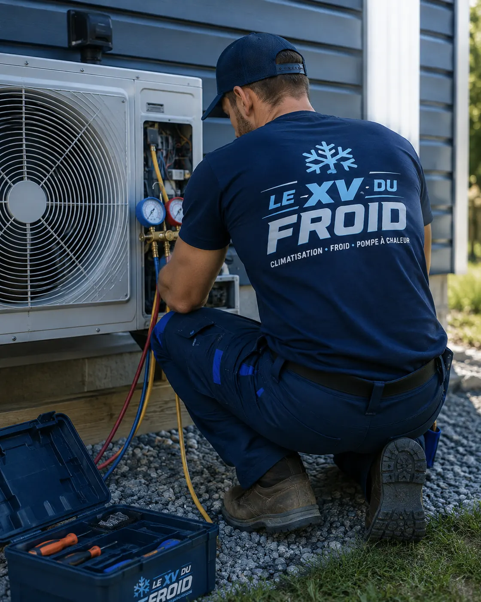

Dépannage climatisation Sartrouville · 78500
Dépannage climatisation à Sartrouville : l’air qui sort est tiède, d’où ça vient ?
L’unité tourne, le ventilateur souffle, la télécommande dit « froid » et pourtant l’air reste tiède. C’est la panne la plus décrite au téléphone. Elle a une dizaine de causes, de la plus bête à la plus chère, et on les passe en revue dans l’ordre.
- Causes passées en revue dans l’ordre
- Mesures de température sur place
- Devis écrit avant réparation

Le constat
Tiède ne veut pas dire cassé.
Une climatisation en bonne santé souffle environ dix degrés plus frais que l’air repris. Si l’écart est de trois ou quatre degrés, l’appareil fait quelque chose mais pas assez.
Dans la plupart des cas, la cause est simple : un filtre étouffé, une grille extérieure obstruée, une consigne mal réglée. Les causes plus lourdes viennent ensuite : manque de fluide, compresseur fatigué, carte électronique.
Dès que vous constatez que la clim ne refroidit plus, essayez de répondre à deux questions : depuis quand, et le groupe extérieur tourne-t-il ?

Le tour des causes simples
Le filtre d’abord. Sorti et regardé à la lumière, s’il est gris et feutré, l’air passe mal. Un échangeur encrassé derrière lui fait le même effet.
Le mode ensuite : « sec » ou « ventilation » ressemblent à du froid sur l’écran mais ne refroidissent pas. Une consigne à vingt-sept degrés dans une pièce à vingt-six ne déclenche rien.
Le groupe extérieur enfin : s’il ne tourne pas, ou si la grille est couverte de feuilles ou d’un sac, la chaleur ne s’évacue plus.
- Filtre propre
- Mode et consigne vérifiés
- Groupe extérieur dégagé
À Sartrouville
Balcon plein sud ou toit-terrasse : le groupe cuit
Dans les immeubles proches de la gare et du centre, de nombreux groupes sont posés sur un balcon ou un toit exposé toute la journée. Au soleil, avec un mur chaud derrière, le groupe a du mal à évacuer la chaleur. L’appareil protège alors le compresseur en réduisant son effort.
Un pare-soleil ventilé à distance, jamais collé à la grille, aide parfois. On peut aussi décaler l’utilisation aux heures plus fraîches.
Ne posez pas de bâche contre le groupe. Elle bloque la ventilation et fait monter la température du compresseur.
Le gaz
Recharge gaz climatisation : ce qu’il faut savoir
Un manque de fluide frigorigène donne exactement ce symptôme : l’air est tiède, parfois du givre apparaît sur les tuyaux. Mais le fluide ne se consomme pas. S’il en manque, c’est qu’il y a une fuite quelque part.
Recharger sans chercher la fuite, c’est remettre de l’eau dans un seau percé. Une recharge gaz climatisation sérieuse commence donc par la recherche de la fuite, puis la réparation, puis la mise au vide et la charge au poids prévu par le constructeur.
La manipulation de ces fluides est réservée aux professionnels qui ont l’attestation requise. Un kit acheté en grande surface ne règle ni la fuite ni la réglementation.
Les pannes de fond
Quand ce n’est ni le filtre ni le gaz
Les causes qui demandent une visite.
- Compresseur fatigué : il tourne mais comprime mal, l’appareil refroidit peu.
- Détendeur ou vanne obstruée : le fluide circule mal, du givre apparaît à un endroit précis.
- Sonde de température : elle donne une fausse mesure et l’appareil s’arrête trop tôt.
- Carte électronique : elle pilote mal le compresseur ou le ventilateur.
- Mauvais dimensionnement : l’appareil est trop petit pour la pièce, surtout en canicule.
Questions
Climatisation qui souffle tiède à Sartrouville : vos questions
Ma clim souffle de l’air normal, pas froid. Est-elle en panne ?
Pas forcément. Vérifiez d’abord le mode, la consigne, le filtre et la grille du groupe extérieur.
Peut-on recharger soi-même avec un kit ?
Non. La manipulation du fluide est réservée aux professionnels attestés, et un manque de fluide signale une fuite à trouver.
Le dépannage clim Sartrouville se fait-il en une visite ?
Souvent oui pour un filtre, un ventilateur ou un condensateur. Un compresseur ou une carte demande parfois une commande de pièce.
La climatisation ne refroidit plus depuis l’orage, est-ce lié ?
Peut-être : une surtension peut abîmer une carte. Un redémarrage du courant donne un premier indice.
Mon appareil refroidit moins qu’avant, c’est l’âge ?
Il se dégrade en effet avec les années, mais un nettoyage et un contrôle des pressions rendent souvent une bonne part de son efficacité.
Dépannez-vous un appareil posé par un autre installateur ?
Oui, quelle que soit la marque, si le modèle est identifiable.
Dans votre ville
Les autres services à Sartrouville
Un besoin différent, une page différente : dépannage, entretien, installation ou urgence.
- Installation climatisation Sartrouville : installer une climatisation en maison
- Entretien climatisation Sartrouville : échangeur, bac à condensats et nettoyage
- Urgence climatisation Sartrouville : fuite d’eau au plafond ou sur un meuble
- Climatisation dans les Yvelines (78) : installation, dépannage, entretien, urgence
Autour de chez vous
Dépannage de climatisation dans les villes voisines
Si vous êtes à la limite de deux communes, lisez aussi la page d’à côté.
- Dépannage climatisation Houilles : locataire, qui paie et que dire au propriétaire
- Dépannage climatisation Maisons-Laffitte : odeur et moisissure, dépannage ou nettoyage
- Dépannage climatisation Andrésy : climatiseur mobile ou monobloc
- Dépannage climatisation Montesson : les questions posées avant la visite
- Dépannage climatisation Carrières-sur-Seine : groupe qui givre et vapeur en mode chauffage
- Dépannage climatisation Conflans-Sainte-Honorine : manque de gaz, fuite et recharge
- Dépannage climatisation Chatou : bruits, vibrations et ventilateur qui racle
- Dépannage climatisation Triel-sur-Seine : la clim qui s’arrête dans une maison près de la Seine
- Dépannage climatisation Carrières-sous-Poissy : panne sur une clim récente, garantie et premiers contrôles
À côté
D’autres besoins dans les communes voisines
Chaque ville a ses pages.
Nos services
Aller plus loin sur la climatisation
Les pages du site qui complètent celle-ci : services, guides pratiques et devis.
- Dépannage climatisation en Île-de-France
- Installation de climatisation : split, gainable, monobloc
- Entretien de climatisation et de clim réversible
- Demander un devis climatisation gratuit
- Toutes nos zones d’intervention
- Quelle puissance de climatisation choisir ?
- Ma climatisation ne refroidit plus : que faire ?
Où on intervient
Sartrouville et alentours
Le centre, le quartier du Plateau, autour de la gare, ainsi que Houilles, Montesson, Maisons-Laffitte et Carrières-sur-Seine.
Demander un dépannageÀ lire aussi
Autour de Sartrouville
Pages voisines : climatisation Houilles, climatisation Montesson, climatisation Maisons-Laffitte.
Transparence
Un devis clair avant toute intervention.
Vous savez ce qui est prévu, pourquoi c’est nécessaire et à quel tarif avant que le technicien commence. Puis contrôles et essais avant son départ.